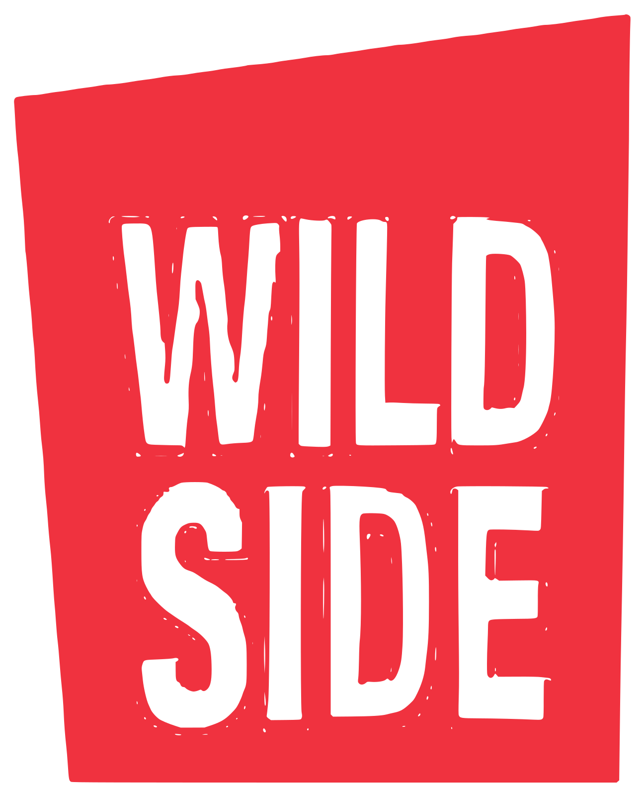

Aus dem Archiv
Aus dem Archiv

Euer Abend.
Ein Dinner an der langen Tafel, die ganze Bar für eure Gesellschaft, Musik, die zum Abend passt.
Anfragen per DM oder Telefon

Aus dem Archiv
Jeder Drink ein Unikat.
Milk Washing, Fat Washing, Enzyme. Und wer einen Negroni will, bekommt ihn.
Momos Karte wechselt

Aus dem Archiv
Ohne Alkohol
Mit derselben Sorgfalt.
Shrub, Soda, Kräuter, klarer Saft.
Jeder Drink geht auch ohne
 1 / 4
1 / 4Die Bar ausser Haus
Grösser als die Bar
30 · 04
Tanz in den Mai.
Musik, Momo an der Bar, Eintritt frei.
Wenn es warm ist, stehen die Tische vor der Tür

Aus dem Archiv
SESSION
Samstag · 21 bis 1 Uhr
Samstag legt jemand auf.
Momo mixt dazu. Ohne Eintritt.
 Film
FilmGastschicht
Jemand anderes am Shaker
Erst die Frage, dann das Glas.
Momo fragt nach dem Geschmack, nach dem Glas, nach dem, was drin sein soll.
So läuft es an der Theke

Aus dem Archiv
14 · 02
Valentinstag.
Mit Rudi von Culinarium: vier Drinks und Teller zum Teilen, nur an diesem Abend.
Reservieren erwünscht
 1 / 5
1 / 5Feiern im Wild Side
Eure lange Tafel
SESSION
Samstag · 21 bis 1 Uhr
Das erste Mal 2027.
Wer auflegt, verraten wir in der Story.
Danke für 2026.
Für jede Frage an der Theke, jeden Abend unter der Decke und jedes Lied am Samstag.
Derya · Momo

Aus dem Archiv
31 · 12
Silvester ab mittags.
Frühschoppen an der Bar, und abends geht es weiter.
Den Mexikaner gibt es die ganze Nacht
Falstaff Bar Guide 2027
91 Punkte.
Falstaff Bar Guide 2027, Kategorie Cocktailbars. Drinks: 47 von 50.
Danke an alle an der Bar
Im Winter
Drei Jahre Wild Side.
Mit DJs, Mexikanern und einem Drink zur Begrüssung für die ersten Gäste.
Der Geburtstag der Bar
 1 / 4
1 / 4Wie Momo arbeitet
Drei Techniken aus dem Labor
Du sagst mir, was du magst, ich mache dir einen Drink.
Momo · an der Theke
Jeder Abend ein Plakat.
Rot-cremefarbene Wellen, das Gesicht des Abends in Schwarzweiss.
SESSION · seit September 2025
SESSION
Samstag · 21 bis 1 Uhr
Sip & Sound.
Drinks und Musik an einem Abend. Ohne Eintritt.
Was magst du?
Die Karte wechselt immer wieder. An der Bar sagst du, was du magst.
Walk on the Wild Side · Linden